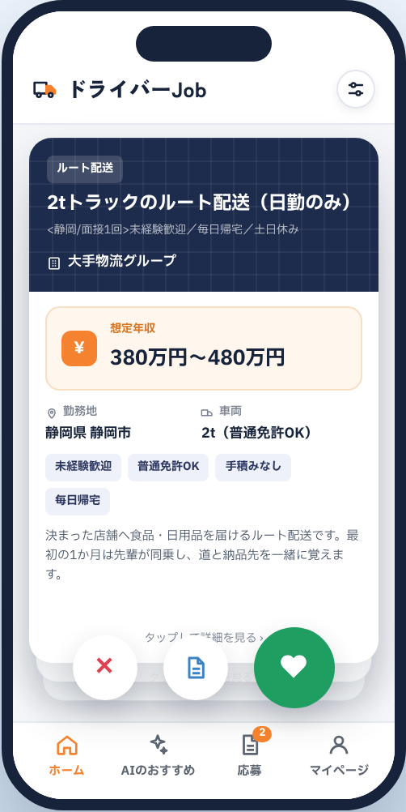
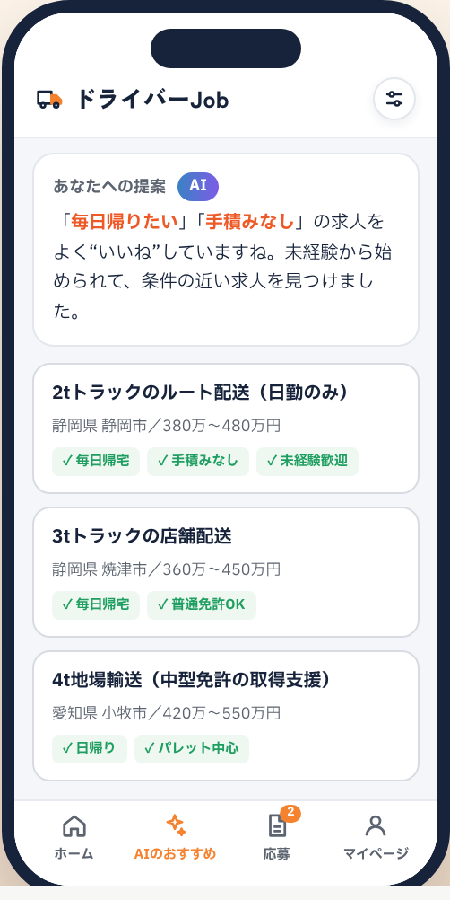
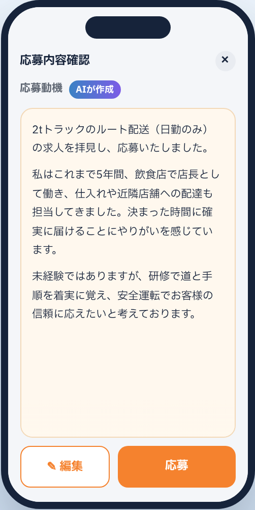

鈴与自動車運送様
採用自体はできているが、採用チャネルの拡充を図りたい
既存チャネルと重ならない層を足す
- 他社で乗務中の現役ドライバー：転職サイトを見ていない層に、SNS広告から届けます。
- 他業種からの転身希望者：免許取得後の候補者として、早い段階から接点を持ちます。
- 伝える内容：海上コンテナ・バルク・重量物という、経験が資産になる仕事の専門性。
「ドライバーJob」は、求人をスワイプして選ぶAI転職サービスです。職務経歴書も面談予約もいらない入口で、これまでの採用チャネルでは出会えなかった層を集めます。

求人媒体や紹介会社を増やしても、届く先が同じ層であれば応募は増えにくくなります。一方で、転職を考えていても従来のサービスの入口で止まっている人がいます。
出所：厚生労働省「一般職業紹介状況」（自動車運転従事者 2026年7月、全職業計 2026年9月）
※ 当社の求職者対応に基づく整理
一般的な転職エージェントとの違いは2点です。入口の手間をなくしていること、そして求職者の行動データをもとにAIが求人を提案することです。
| 求人媒体 | 一般的な転職エージェント | ドライバーJob | |
|---|---|---|---|
| 届く相手 | 求人を検索している人 | 紹介会社に登録した人 | 転職サイトを見ていない層も含む（SNS広告経由） |
| 登録に必要なもの | 会員登録、履歴書 | 職務経歴書、1時間ほどの面談 | スマホで60秒。職務経歴書は不要 |
| 求人との出会い方 | 求職者が自分で検索 | 担当者が選んだ数件の紹介を待つ | 自分でスワイプ＋AIが好みを学んで提案 |
| 応募書類 | 求職者が自分で作成 | 求職者が作成し、担当者が添削 | AIが求人ごとに応募動機を作成 |
| 企業に戻る情報 | 閲覧数、応募数 | 担当者の所感 | “いいね／見送り”の傾向データ |
| 費用 | 掲載課金、クリック課金 | 成功報酬 | 成功報酬（初期費用・掲載費用は0円） |
※ 求人媒体・転職エージェントの欄は、一般的なサービス形態を当社で整理したものです。
求職者がすることは「選ぶ・スワイプする・確認する」だけです。求人探しと文章作成はAIが担います。


※ 画面はイメージです。掲載している求人は表示例です。
求職者の“いいね／見送り”を条件ごとに集計し、求人票を見直す材料としてご報告します。
※ 数値は説明用のサンプルで、実データではありません。
応募に至らなかった理由が、データで残ります。
事前にうかがった両社の状況をもとに、それぞれの使い方をまとめました。
採用自体はできているが、採用チャネルの拡充を図りたい
既存チャネルと重ならない層を足す
静岡西部から愛知にかけての採用を強化したい
採用したい営業所の通勤圏に絞って集める
※ 両社の公開情報をもとに当社で作成しました。訴求内容と対象営業所は、面談にて確認させてください。
初期費用・求人掲載・広告配信の費用はいただきません。既存の採用チャネルと併用できます。
料率と、早期退職時の返金規定などの条件は、面談にてご案内します。
※ スケジュールは目安です。求人数と対象営業所の数により前後します。
併用できます。費用はご入社時のみのため、既存のチャネルを止めずに追加できます。
可能です。登録時に保有免許と乗務経験を確認しており、求人の必須条件に合う方だけをご推薦します。
求人ごとに対象を設定できます。未経験の方は、免許取得支援のある求人や、将来の候補者としてのご紹介に限ることもできます。
ご推薦した方が入社された時点で発生します。求人の掲載、広告の配信、面接の実施だけでは費用は発生しません。
対応できます。営業所・車種ごとに求人票を分けて掲載し、集まり方も営業所別にご報告します。